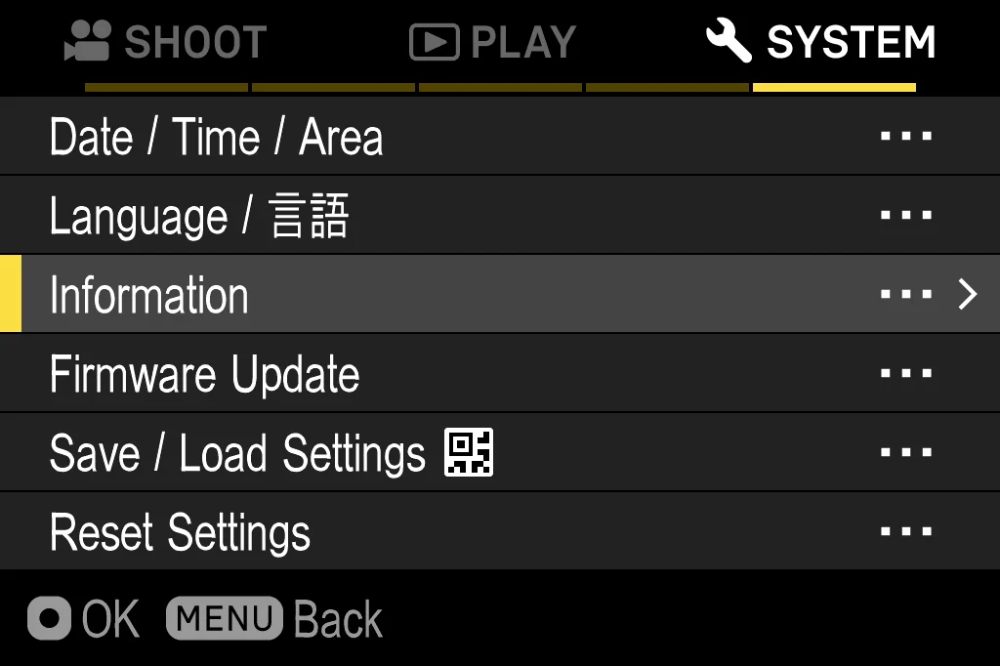
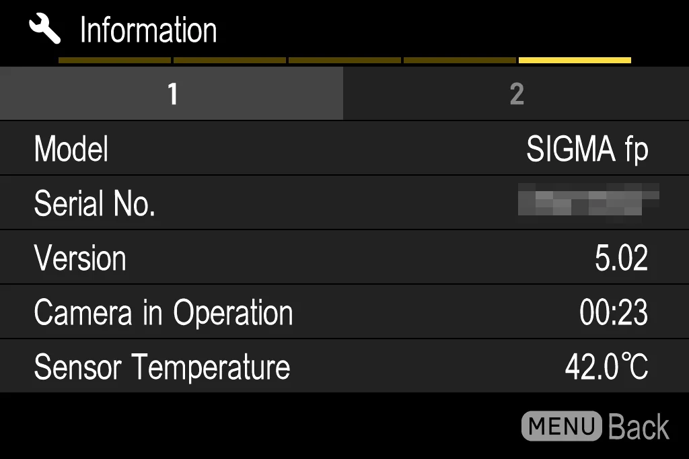
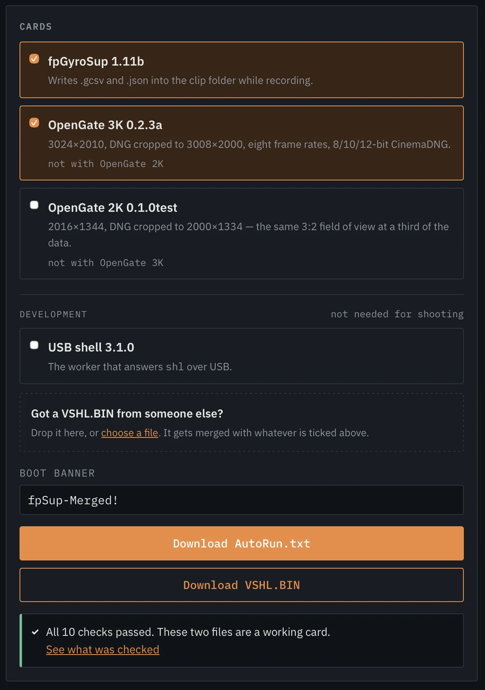
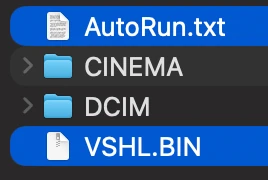
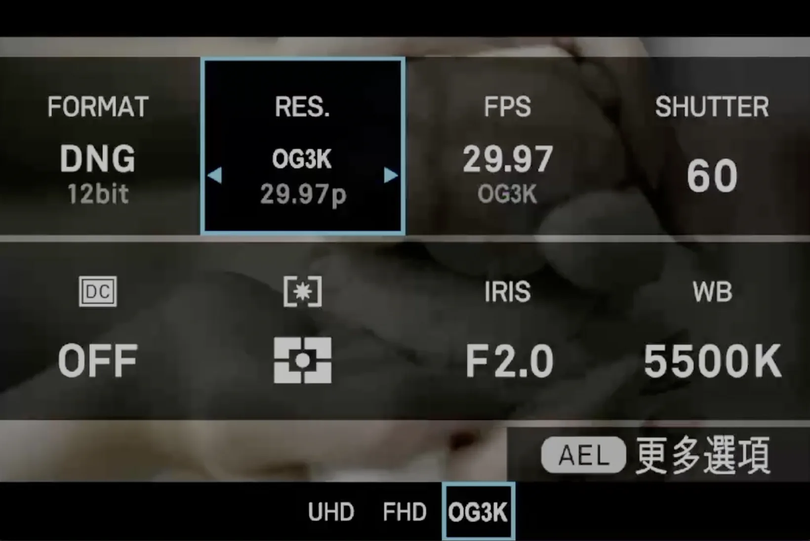
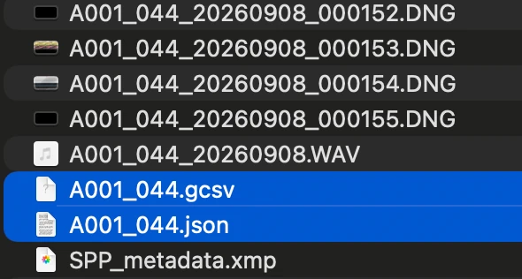
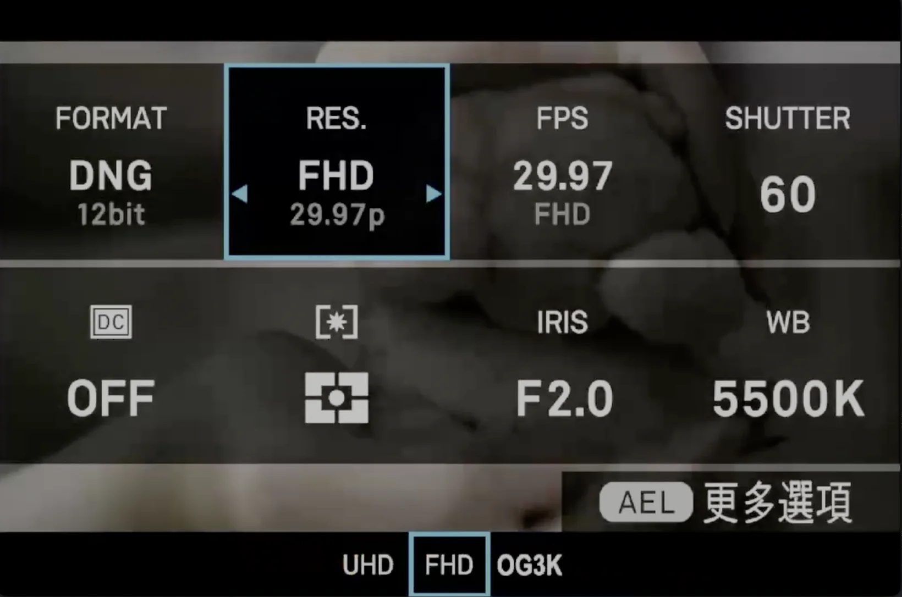

This takes you from an empty SD card to a working camera. Steps 1 to 6 are the same for everyone. Step 7 depends on what you put on the card. Step 8 is how to remove it.
You need a SIGMA fp with firmware Ver.5.02.
To check: MENU → SYSTEM → Information.


Open gate and the gyro both write to the card while you record. A slow card is the most common reason something here does not work.
Open gate needs a lot of speed:
| what you record | speed needed |
|---|---|
| Open gate 3K, 24p, 12-bit | 221 MB/s |
| Open gate 3K, 24p, 10-bit | 184 MB/s |
| Open gate 3K, 24p, 8-bit | 148 MB/s |
| Open gate 2K, 24p, 12-bit | 98 MB/s |
| Normal FHD, 12-bit | 97 MB/s |
| a mid-range UHS-II card we measured | 94 MB/s |
If the card is too slow, the camera stops recording after a few seconds. This is the card, not a bug. No setting can fix it.
The storage benchmark measures your real speed on the camera. The number printed on the card is often higher than the speed you actually get.
If your card is around 94 MB/s, you cannot use open gate 3K. You can use OG2K. It shows the same picture and uses a third of the data.
Open fpSup-Merge and tick what you want. It all runs in your browser. Nothing is uploaded and you install nothing.
| tick | what you get |
|---|---|
| og3k or og2k | The full 3:2 sensor, as a new resolution in the camera menu |
| gyro | Gyroflow motion files, written next to your clip as you record |

You will also see shell on the list. Leave it
off. It is a tool for developers: it lets a computer talk to the camera over
USB, and it adds nothing you can see or use on the camera itself. If you do want
it, the setup is in
the fp_usb_shell
README.
Everything you tick goes on one card and works together.
This is the only place that can combine them. Do not try to combine two releases by copying both sets of files yourself. That card will not start.
You get AutoRun.txt and fpSup.BIN (a download
published before 2026-09-19 names the second file VSHL.BIN; the
two files always travel together, so use whichever pair you downloaded). That
is the whole
card. There is nothing to unzip and nothing to install. This is true no matter how
many things you ticked.
If you changed the banner text, use plain English letters and numbers only. The camera's screen font cannot show anything else.
Turn the camera off and take the battery out. Then take the card out and put it in a card reader.
Copy both files to the top level of the card:
| correct | will not work |
|---|---|
/AutoRun.txt/fpSup.BIN |
/fpSup/AutoRun.txt/DCIM/AutoRun.txt |

CINEMA and
DCIM. Do not put them in a folder.Do not make a folder. Do not rename anything. Do not convert anything.
Also check the small lock switch on the side of the card is not locked. A locked card is the most common reason nothing happens in step 6.
A counter appears in the top left of the screen and fills up:
fpSup[####....]050
When it finishes, it is replaced by a banner naming what you loaded, ending
with !. The name is whatever you set in fpSup-Merge — for
example fpSup! or fpSup-OG3K-v0.2.3a!.
Expect ten to twenty seconds, depending on how much is on the card.
fpShell-dbg1! — yours will say whatever you named it.The banner means it worked. If you see it, go on to step 7. If you do not see it, go to the problems list instead of trying again.
This happens every time you turn the camera on, as long as the file is on the card. Nothing is installed. The camera reads the card and builds it all again in memory each time. That is why removing it is easy.
This step depends on what you ticked in step 3. If you ticked both, they both work at the same time.
First, turn Super35 / crop off. OG3K cannot record while crop is on. You press record and nothing happens, and the camera does not tell you why. Check this before you blame the card.
Then choose the new resolution in the camera's normal menu:
MENU → recording → resolution, or
Quick Set → RES. Choose the frame rate and CinemaDNG quality as
you normally would.

This is a real menu item, so the camera remembers your choice. That is why step 8 has an order you need to follow.
There is nothing to turn on and no menu to find. While you record, it writes two files inside the clip's own folder:
A001_037.gcsv | the motion log |
A001_037.json | the lens profile |

In Gyroflow, load the frames and both files, then run the sync.
You cannot skip the sync, and you cannot reuse a number from last time. CinemaDNG has no timecode, and the log starts about half a second after the first frame — between 470 and 570 ms, and different in every take.
Gyroflow asks for a frame rate when you give it a DNG sequence. Enter the rate you recorded at — it cannot read that from the frames.
There is a Gyroflow plugin for Resolve, so you can stabilise on the timeline instead of exporting from Gyroflow first. The two sidecar files are the same ones; the plugin reads them.
The .json is the lens profile. The camera makes it from its own
calibration data for the lens that is mounted, so it needs a lens with
electronic contacts.
With a manual lens, or through an adapter, the camera may not know the lens or
may report the wrong one. The .json is then wrong, and Gyroflow will
correct the picture in a way that does not match your real lens. The motion log
(.gcsv) is not affected — that part is always correct.
What to do: do not use the .json. Use Gyroflow's own lens
calibration instead. It is built in: you film a calibration target, and
Gyroflow works out the real distortion of your lens and saves a profile you can
reuse for that lens.
Portrait takes need nothing special — the camera records every frame landscape upright, so Gyroflow reads them like any other take. Leave horizon lock off.
Some builds write a single raw .GYR file instead of
these two. If that is what you have, the converter turns it
into the same pair, in your browser.
README.txt that says
what was tested and what was not. Read the one for what you loaded. Then record
something you do not need, and check it, before you record something you do.First, while the card still works:
Set the resolution back to a normal one — UHD or FHD — in
MENU → recording → resolution or
Quick Set → RES. If you changed any other fpSup menu item, set
that back too.

Then:
Delete AutoRun.txt from the card. Turn the camera off.
Take the battery out. Put it back and turn the camera on.
Your camera is now completely normal. Nothing was written to the camera itself, so there is nothing else to undo.
Take the battery out, do not just restart. A warm restart has not been tested.
AutoRun.txt, turn the camera on
so the resolution exists again, set it back to a normal one, and then delete the
file. The setting is only a problem while the code behind it is missing.| what happens | what to do |
|---|---|
| Nothing appears on the screen | The card did not run. Check the file is called
AutoRun.txt and is at the top level of the card. Check the lock
switch on the card is off. |
| The progress bar stops in the middle | The load failed there. Build the card again instead of reusing it. Bring the text on screen to the Discord. |
| The banner appeared but nothing changed | Check where you are looking — step 7. Open gate is a resolution in the menu. The gyro has no menu at all; it makes files next to your clip. |
| No new resolution in the menu | Super35 / crop is on, or the camera is not set to CinemaDNG. |
No .gcsv next to the clip |
Two possible causes. First check the banner really named the gyro build. If it did, the card is probably too slow: these files are written while you record, and a slow card loses them first. See step 2. |
| Gyroflow stabilises, but the picture looks bent or stretched | The lens profile does not match your lens. This happens with adapters and
manual lenses. Use Gyroflow's own lens calibration instead of the
.json — step 7. |
| Recording stops after a few seconds | The card is too slow. Step 2. This is the most common problem, and it is the card. |
| You removed the files and now recording is wrong | A setting is still pointing at something that is gone. Put the card back, set the resolution to a normal one, then remove it again — step 8. |
| The camera does not respond at all | Take the battery out. Nothing here is permanent, so the next start is clean. |
Still stuck? Ask on the Discord. Tell us the banner text you saw on screen, which card you use, your firmware version, and what you ticked in fpSup-Merge.